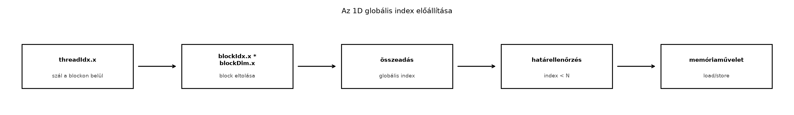

Amikor egy kernelt elindítunk, a hardver nem ismeri a feladat logikai
szerkezetét. Csak azt látja, hogy egy rácsnyi (grid) blokkot és
blokkonként egy adott számú szálat kell ütemeznie. A programozó
feladata, hogy ebből a hierarchiából egy lineáris, az adathoz illeszkedő
azonosítót képezzen. Ez a fejezet ezt a leképezést tárgyalja 1D-s tömbök
esetén. A cél annak megértése, hogyan válik a hardver által biztosított
három beépített indexből – threadIdx,
blockIdx, blockDim – a feldolgozandó elem
globális pozíciója, és miért nélkülözhetetlen a határellenőrzés
(boundary check), ha a tömb mérete nem osztható a blokkmérettel.
A fejezetben szereplő kódok CUDA C++ nyelvűek, és az itt bemutatott kernel „tankönyvi” jellegű: a hangsúly az indexelésen van, nem a memória-átviteli vagy futási sebességen. A labor feladata éppen ezért nem egy nagy teljesítményű számítás, hanem egy ellenőrizhető, kis méretű példa, amelynél a várt és a mért eredmény pontosan összevethető.

A CUDA végrehajtási modellje három szintre bontja a párhuzamos munkát: a szálak egy blokkba szerveződnek, a blokkok pedig egy rácsba. A kernel belsejében a szál pozícióját kizárólag beépített, csak olvasható változókból tudhatjuk meg:
threadIdx – a szál indexe a blokkon belül. Típusa
dim3, amely három komponenst tartalmaz:
threadIdx.x, threadIdx.y,
threadIdx.z. 1D-s indításnál a y és
z komponens értéke 0, az x komponens pedig
0 és blockDim.x - 1 közé esik.blockIdx – annak a blokknak az indexe, amelyhez a szál
tartozik, a rácson belül. Szintén dim3 típusú, 1D-s
indításnál a blockIdx.x értéke 0 és
gridDim.x - 1 között változik.blockDim – a blokk mérete, tehát az egy blokkban
található szálak száma dimenziónként. 1D-s indításnál csak a
blockDim.x fontos, a többi komponens 1.gridDim – a rács mérete, tehát a blokkok száma
dimenziónként. 1D-s indításnál a gridDim.x adja meg, hány
blokk indult.Ezek a változók minden szálban azonos módon olvashatók, de az értékük
szálanként eltérő. Például egy
<<<4, 256>>> indításnál a
gridDim.x értéke 4, a blockDim.x értéke 256; a
blockIdx.x az egyes blokkokban 0, 1, 2 vagy 3, a
threadIdx.x pedig minden blokkban 0 és 255 között fut. A
ténylegesen elindított szálak száma ebben a példában 4 * 256 = 1024.
A hardver nem ígéri meg, hogy a blokkok sorrendben hajtódnak végre,
és azt sem, hogy egy blokkon belül a szálak ütemezése milyen sorrendű.
Az indexszámításnak ezért mindig determinisztikusnak
kell lennie, és kizárólag a fenti beépített változóktól, valamint a
kernel argumentumaitól szabad függenie. Ha egy szál a
threadIdx.x-ét ismeri, az még nem elegendő; szüksége van a
blockIdx.x-re is ahhoz, hogy a rács összes szálán belül
egyedi pozíciót kapjon.
A legegyszerűbb és leggyakrabban használt leképezés a következő:
globalIdx = blockIdx.x * blockDim.x + threadIdx.xEz a képlet a rácson belüli blokkokat egymás után elhelyezve egy
virtuális, lineáris száltartományt hoz létre. Ha a
blockDim.x értéke B, akkor a 0. blokk szálai a
0..B-1, az 1. blokk szálai a B..2B-1
intervallumba esnek, és így tovább. A
blockIdx.x * blockDim.x kifejezés tehát megadja az adott
blokk kezdő indexét, a threadIdx.x pedig ezen belül a szál
helyét.
Érdemes hangsúlyozni, hogy a szorzat típusa 1D-s indításnál a
beépített változók miatt unsigned int. Bár a gyakorlatban a
grid és blokk mérete rendszerint jóval kisebb, mint az
unsigned int felső határa, nagy adathalmazoknál a
blockIdx.x * blockDim.x kifejezés túlcsordulhat. Például ha
gridDim.x a megengedett maximum közelében van (nagyjából
2,1 milliárd blokk) és blockDim.x 1024, a szorzat
meghaladja a 32 bites tartományt. Emiatt erősen ajánlott az indexet
legalább size_t típusra kasztolni, mielőtt nagy tömbökhöz
használjuk. A modern CUDA C++ kódokban a következő minta terjedt el:
size_t idx = static_cast<size_t>(blockIdx.x) * blockDim.x + threadIdx.x;A static_cast miatt a szorzás már 64 bites unsigned
értéken történik, így elkerülhető a csendes túlcsordulás. Ez a részlet
aprónak tűnik, de az 1D-s indexelés egyik leggyakrabban elfelejtett
buktatója. A képlet logikája természetesen ugyanaz marad, csak a típus
változik.
A kernel gyakran egyetlen sorban használja ezt a globális indexet.
Például egy olyan kernel, amely egy n hosszú tömb
i-edik elemét az indexének megfelelő értékkel tölti fel,
így néz ki:
__global__ void fillIndices(int* out, size_t n)
{
size_t idx = static_cast<size_t>(blockIdx.x) * blockDim.x + threadIdx.x;
if (idx < n) {
out[idx] = static_cast<int>(idx);
}
}Itt a szálak egyértelműen leképezik a rácsbeli pozíciójukat a tömb
egy-egy elemére. A idx < n feltétel a határellenőrzés,
amelyre a következő szakaszban térünk ki.
Fontos megjegyezni, hogy a globális index nem azonos
a szál ütemezési sorszámával. A hardver a szálakat nem feltétlenül a
idx növekvő sorrendjében hajtja végre, és a blokkok közötti
sorrend sem meghatározott. A idx kizárólag a programozó
számára biztosít egy konzisztens, az adathoz köthető azonosítót. Ezért
mondjuk azt, hogy a blockIdx, blockDim és
threadIdx a kernel logikai koordinátái, míg a hardver
tényleges végrehajtási rendje a scheduler feladata.
Ritkán fordul elő, hogy a feldolgozandó tömb hossza pontosan osztható
a választott blokkmérettel. Ha N nem többszöröse
blockDim.x-nek, az utolsó blokkban több szál indul, mint
ahány elem feldolgozásra vár. Ilyenkor a globális index egy része kívül
esik a [0, N-1] intervallumon. Ha a kernel nem ellenőrzi a
határt, ezek a szálak érvénytelen memóriacímet érhetnek el.
Klasszikus példa: legyen N = 1000, a blokkméret pedig
256. A szükséges blokkok számát a felfelé kerekített
osztással kapjuk:
blocksPerGrid = ceil(N / 256) = ceil(3.906) = 4A 4. blokkban, amelynek blockIdx.x értéke 3, a globális
indexek a 768 és 1023 közötti tartományba
esnek. Azonban a tömb csak a 0..999 indexeket tartalmazza.
A 1000..1023 indexekre történő írás (vagy olvasás) kívül
esik a lefoglalt memóriaterületen, ami a CUDA-ban definiálatlan
viselkedéshez, gyakran
CUDA error: an illegal memory access was encountered
üzenethez vezet. A hiba nem mindig azonnal jelentkezik, ezért a
diagnosztika később is nehéz lehet.
A megoldás a kernelben egyetlen feltételes utasítás:
if (idx < n) {
// valódi munka, pl. out[idx] = idx;
}Ez a boundary check biztosítja, hogy csak azok a szálak férnek hozzá a tömbhöz, amelyekhez valóban tartozik elem. A feltétel hamis ágában a szál egyébként is kilépne, de így explicit módon nem végez memóriaműveletet. A költség rendszerint elhanyagolható, és a korrektség szempontjából kötelező.
A boundary check hatására a fenti példában a 4. blokk utolsó 24 szálja tétlen marad. Ez nem „tökéletes” erőforrás-kihasználás, de helyes. A későbbi fejezetben tárgyalt grid-stride loop technika ezt a pazarlást hivatott csökkenteni azáltal, hogy a szálak egymás után több elemet is feldolgoznak, így a blokkok száma függetlenné válik az adat méretétől. Ebben a fejezetben azonban az egyszerű, egy elem egy szálhoz rendelés a cél, ezért a boundary check marad a központi eszköz.
Fontos, hogy a boundary check a globális indexre
vonatkozik, nem a threadIdx-re vagy a
blockIdx-re. Az if (threadIdx.x < n)
feltétel például hibás, mert a threadIdx.x minden blokkban
0..blockDim.x-1 között mozog, így az n
értékétől függően vagy túl keveset, vagy túl sokat engedne.
Hasonlóképpen az if (blockIdx.x < n) sem helyes, mert a
blokk indexe nem azonos az elem indexével.
Nézzünk egy konkrét, futtatható példát. Az alábbi kernel egy
N elemű float tömböt skáláz egy konstanssal. A
host oldali N tetszőleges pozitív egész lehet, a kernel a
boundary check miatt minden esetben korrekt marad:
__global__ void scaleVector(const float* in, float* out, float alpha, size_t n)
{
size_t idx = static_cast<size_t>(blockIdx.x) * blockDim.x + threadIdx.x;
if (idx < n) {
out[idx] = alpha * in[idx];
}
}A kernel egyetlen szálat rendel egyetlen tömbelemhez, és a
idx < n feltétel levágja a felesleges szálakat. Ha
n nagy, a host oldali blokkszámításnak is helyesnek kell
lennie.
A kernel indításához a host oldalon meg kell adni a rács és a blokk méretét. A leggyakoribb minta 1D-s feldolgozásnál:
threadsPerBlock = 256.size_t blocksPerGrid = (n + threadsPerBlock - 1) / threadsPerBlock;scaleVector<<<blocksPerGrid, threadsPerBlock>>>(d_in, d_out, alpha, n);A blocksPerGrid számításánál az egész osztás
természetéből adódóan a n + threadsPerBlock - 1 kifejezés
biztosítja a felfelé kerekítést. Például n = 1000,
threadsPerBlock = 256 esetén
(1000 + 255) / 256 = 4, míg a sima 1000 / 256
3-at adna, ami nem lenne elegendő.
Fontos ellenőrizni, hogy a kapott blocksPerGrid nem lépi
túl a hardver gridDim.x korlátját. A mai GPU-kon ez a
korlát 2^31 - 1 (nagyjából 2,1 milliárd) blokk, ami a
legtöbb valós adatnál bőven elég. Ha az adat mérete ezt meghaladná, a
grid-stride loop vagy többdimenziós grid válik szükségessé. Emellett a
threadsPerBlock nem lehet nagyobb, mint a hardverenként
eltérő maximális szálszám (általában 1024). A
cudaGetDeviceProperties függvénnyel kérdezhető le a pontos
korlát.
A launch konfigurációban a blocksPerGrid típusa a
hagyományos CUDA példákban int, mert a kernel launch
operátora integer típusokat vár. Ha a számítás size_t
típussal történt, explicit kasztolásra lehet szükség:
int blocksPerGrid = static_cast<int>((n + threadsPerBlock - 1) / threadsPerBlock);Ez a kasztolás biztonságos, amíg blocksPerGrid a fent
említett korlát alatt marad. Nagy n esetén azonban
előbb-utóbb elérjük a 32 bites korlátot; ekkor a grid-stride loop a
fenntartható megoldás.
Az 1D-s globális indexszámítás egyszerűnek tűnik, mégis számos jellegzetes hiba forrása. Az alábbiak a leggyakoribbak.
1. A szorzás és összeadás sorrendjének
felcserélése.
Hibás: idx = threadIdx.x * blockDim.x + blockIdx.x.
Helyes: idx = blockIdx.x * blockDim.x + threadIdx.x.
A hibás változatban a threadIdx.x * blockDim.x kifejezés a
blokkon belüli szál pozícióját szorozza meg a blokk méretével, ami
átfedő indexeket eredményez. Például blockDim.x = 256
esetén a 0. blokk 1. szálának hibás indexe 256, miközben a
helyes index 1 lenne. Ez a hiba gyakran nehezen
észrevehető, mert a kernel fut, de a memória-hozzáférések szétszórtak és
rosszak.
2. A boundary check elhagyása.
Minden olyan kernelben, ahol a globális index a tömb hosszának nem
állandó osztója, kötelező az if (idx < n) feltétel.
Ennek elhagyása a legtöbb esetben érvénytelen memória-hozzáféréshez
vezet, amelyet a compute-sanitizer vagy az cuda-memcheck
jelez. A hiba tünete lehet a nem determinisztikus crash, az eldurvult
adatok vagy a csendes korrupció. A javítás egyszerű, de a
figyelmetlenség sok időt emészthet fel.
3. Az index típusának túlcsordulása.
A blockIdx.x * blockDim.x kifejezés
unsigned int típusú, és nagy gridnél túlcsordulhat. A már
említett static_cast<size_t> megoldás mellett fontos,
hogy a kernel argumentumai is megfelelő típusúak legyenek. Ha a kernel
int n paramétert vár, de a host oldalon size_t
érkezik, a 64 bites érték 32 bitesre csonkulhat. A konzisztencia
érdekében a kernel paramétere és a host oldali számítás is
size_t legyen.
4. A blokkméret helytelen megválasztása.
Bár a hardver megenged bizonyos határokat (például blokkonként maximum
1024 szál), a gyakorlatban a 256, 512 vagy 1024 a gyakori választás. A
rossz blokkméret nem feltétlenül okoz indexelési hibát, de befolyásolja
a teljesítményt. Ebben a fejezetben a korrektségre koncentrálunk, a
teljesítményoptimalizálás a későbbi részek témája.
5. A gridDim és blockDim
összekeverése.
A globális index képletében kizárólag a blockDim.x
szerepel, nem a gridDim.x. A gridDim.x azt
adja meg, hány blokk indult, de az index kiszámításához a blokkon belüli
szálak számára van szükség. A kettő felcserélése szintén hibás
indexeléshez vezet.
6. Több kernel hívásakor a beépített változók értékének
átmentése.
A threadIdx, blockIdx stb. csak a kernel
futása alatt érvényesek, és minden kernelhívásban friss értéket kapnak.
Nem lehet őket host oldalra kimenteni vagy két kernel között megosztani.
Ha egy kernelből szeretnénk átadni valamilyen indexet, azt explicit
módon írjuk ki a globális memóriába.
A fejezet laborja egy olyan CUDA C++ program, amely egy
N hosszú egész tömböt tölt fel a globális index értékével:
a[i] = i. A feladat célja, hogy a hallgató a saját
környezetében futtassa a kódot, ellenőrizze a tömb tartalmát, és
rögzítse a mérési körülményeket. A kernel szándékosan egyszerű, hogy a
figyelem az indexelésre és a boundary checkre irányuljon.
A labor előtt győződjön meg arról, hogy a CUDA Toolkit és a driver
telepítve van, és a nvidia-smi parancs elérhető. A kódot
izolált környezetben futtassa, mert a hibás kernel eszközleállást
okozhat; állítson be timeoutot és visszaállítási tervet.
Az alábbi kód egy teljes, fordítható CUDA C++ program. A
hibakezeléshez egy egyszerű makrót használ, amely minden CUDA API hívás
után ellenőrzi a hibakódot. A kernel a fillIndices nevet
viseli, és a globális indexet a fent tárgyalt módon számítja ki.
// fill_indices.cu
// Fordítás: nvcc -std=c++17 -O3 -o fill_indices fill_indices.cu
#include <cuda_runtime.h>
#include <iostream>
#include <vector>
#include <cassert>
#include <cstdlib>
// Hibakezelő makró
#define CUDA_CHECK(call) \
do { \
cudaError_t err = call; \
if (err != cudaSuccess) { \
std::cerr << "CUDA error at " << __FILE__ << ":" << __LINE__ \
<< " - " << cudaGetErrorString(err) << std::endl; \
std::exit(EXIT_FAILURE); \
} \
} while (0)
// Kernel: a tömb i-edik elemét i-vel tölti fel
__global__ void fillIndices(int* out, size_t n)
{
size_t idx = static_cast<size_t>(blockIdx.x) * blockDim.x + threadIdx.x;
if (idx < n) {
out[idx] = static_cast<int>(idx);
}
}
int main()
{
// A feldolgozandó elemek száma
const size_t n = 1000;
// Blokkméret és rács méret
const int threadsPerBlock = 256;
const int blocksPerGrid = static_cast<int>((n + threadsPerBlock - 1) / threadsPerBlock);
// Eszköz oldali memória
int* d_out = nullptr;
CUDA_CHECK(cudaMalloc(&d_out, n * sizeof(int)));
// Kernel indítás
fillIndices<<<blocksPerGrid, threadsPerBlock>>>(d_out, n);
CUDA_CHECK(cudaGetLastError()); // kernel launch hibák ellenőrzése
CUDA_CHECK(cudaDeviceSynchronize()); // szinkronizáció a másolás előtt
// Eredmény visszamásolása
std::vector<int> h_out(n);
CUDA_CHECK(cudaMemcpy(h_out.data(), d_out, n * sizeof(int), cudaMemcpyDeviceToHost));
// Ellenőrzés: h_out[i] == i minden i-re
bool ok = true;
for (size_t i = 0; i < n; ++i) {
if (h_out[i] != static_cast<int>(i)) {
std::cerr << "Hiba: h_out[" << i << "] = " << h_out[i]
<< ", várt: " << i << std::endl;
ok = false;
break;
}
}
if (ok) {
std::cout << "Az 1D indexelés helyes: minden elem megegyezik az indexszel.\n";
}
// Takarítás
CUDA_CHECK(cudaFree(d_out));
return ok ? EXIT_SUCCESS : EXIT_FAILURE;
}A kernel a blockIdx.x * blockDim.x + threadIdx.x
képletet használja size_t-re kasztolással, majd a
if (idx < n) feltétellel levédi a felesleges szálakat. A
host oldalon a blocksPerGrid értéke
(1000 + 255) / 256 = 4, tehát 4 blokk, blokkonként 256
szállal. A kernelben a blockIdx.x 0..3 között fut, a
threadIdx.x 0..255 között. A globális indexek 0..1023-ig
terjednek, de csak a 0..999 tartomány kerül feldolgozásra; az utolsó 24
szál tétlen.
A várt eredmény: a h_out tömb minden eleme pontosan az
indexe. Ez a program ezt ellenőrzi, és a kimeneten megjeleníti a
sikert.
A könyv konvencióinak megfelelően minden GPU-mérésnél rögzíteni kell a környezetet, a mérési módszert és az eredményt. Az alábbi táblázat a laborhoz tartozó mérési napló sablonja. A konkrét értékeket a futtatás után kell kitölteni, és a mért rovatban szereplő adatok tényleges mérésből származnak.
| Mező | Érték |
|---|---|
| GPU modell | pl. NVIDIA A100 40 GB PCIe |
| Compute capability | pl. 8.0 |
| Driver verzió | pl. 550.54.14 |
| CUDA Toolkit | pl. 12.4 |
| Operációs rendszer | pl. Ubuntu 22.04 LTS |
| Fordító | nvcc 12.4.0 |
| Kernel | fillIndices |
Blokkméret (blockDim.x) |
256 |
Grid méret (gridDim.x) |
4 |
Input méret (n) |
1000 |
| Precision | FP32 (a kernel int indexet ír, a precision itt N/A) |
| Warm-up iterációk | 10 |
| Mérési iterációk | 10 |
| Átlagos futásidő (kernel) | pl. 5,2 µs |
| Szórás | pl. 0,41 µs |
| Várt eredmény | h_out[i] == i minden i-re |
| Mért eredmény | ellenőrzés sikeres |
A kernel futásidejét CUDA event-ekkel mérhetjük. A labor során a
fenti kódot ki lehet egészíteni cudaEvent_t-vel történő
időméréssel, majd a mérést legalább 10 ismétléssel átlagolni. A mérés
előtt érdemes néhány bemelegítő (warm-up) kernelhívást futtatni, hogy az
eszköz órajele és a memória-állapot stabilizálódjon. Az átlag mellett a
szórást is közölni kell. A mért futásidő ekkora feladatnál nagyon rövid,
ezért a mérési bizonytalanság jelentős; emiatt a labor hangsúlya nem a
sebességen, hanem a korrektségen van.
Ebben a fejezetben az 1D-s globális indexszámítás alapjait jártuk
körül. A kernelbeli szálak egyértelmű azonosításához a
blockIdx.x, blockDim.x és
threadIdx.x beépített változókból a
globalIdx = blockIdx.x * blockDim.x + threadIdx.x képletet
használjuk. Mivel a tömb mérete általában nem osztható a blokkmérettel,
a kernelben mindig gondoskodni kell a if (idx < n)
határellenőrzésről, amely megakadályozza a túlindexelést. A host oldalon
a blokkok számát felfelé kerekített osztással számítjuk, és gondot
fordítunk arra, hogy az index 64 bites típusú legyen a túlcsordulás
elkerülése érdekében.
A következő fejezet (Többdimenziós
indexelés) erre az alapra építve a többdimenziós indexelést
tárgyalja, ahol a dim3 típusú y és
z komponensek is szerepet kapnak. Addig is érdemes az
alábbi kérdést megválaszolni.
Önellenőrző kérdés:
Adott egy N = 1000 hosszú tömb, és a
threadsPerBlock értéke 256. Hány blokk indul,
és összesen hány szál fut? A kernelben miért van szükség boundary
checkre, és melyik az a feltétel, amely ezt biztosítja? Továbbá: mi
történne, ha a képletben a blockIdx.x és a
threadIdx.x sorrendjét felcserélnénk?
Válasz: blocksPerGrid = ceil(1000 / 256) = 4, összesen
4 * 256 = 1024 szál indul. A 1000 elem miatt az utolsó
blokkban 24 szál indexe kívül esik a [0, 999] tartományon,
ezért a kernelben if (idx < n) feltételt kell
alkalmazni. Ha a képletet felcserélnénk, az indexek átfednének és nem
lennének egyediek, ami hibás memória-hozzáférést okozna.